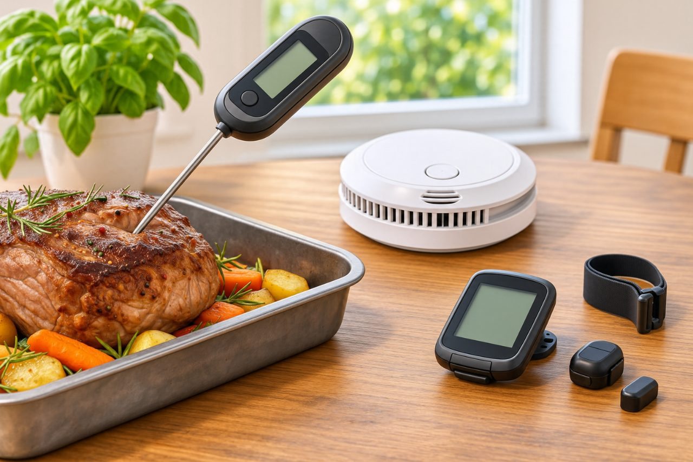

Sinnesorgane und Sensoren

Denk mal nach: Auf dem Tisch liegen ein Grillthermometer, ein Rauchmelder und ein Fahrradtacho. Was „fühlt“ jedes dieser Geräte? Am Ende des Moduls kannst du es erklären.
Du nimmst deine Umwelt mit deinen Sinnesorganen wahr: Augen, Ohren, Nase, Zunge und Haut. Sie melden deinem Gehirn Licht, Schall, Gerüche, Geschmack, Wärme und Druck.
Aber dein Gefühl ist : Das Badewasser ist für dich zu heiß, für deine Schwester genau richtig. Mit einem Gefühl kann man nichts genau messen.
Sensoren messen genau. Ein – auch Messfühler genannt – nimmt ein Signal aus der Umgebung auf: Wärme, Licht, einen Magneten oder ein Gas. Er wandelt es in ein um.
Ein Sensor misst : Er zeigt für alle denselben Wert. Ein Gerät kann sein Signal elektronisch auswerten. Dann zeigt es eine Zahl an, schlägt Alarm oder schaltet einen Motor.
Im Modul 1 hast du schon einen Sensor kennengelernt: Das Mikrofon wandelt Schall in ein elektrisches Signal um. Jetzt geht es um Sensoren für Wärme, Licht und Magnete.
MERKE
- Sinnesorgane nehmen Reize wahr. Wie stark wir etwas empfinden, ist subjektiv – bei jedem Menschen anders.
- Sensoren (Messfühler) nehmen Signale aus der Umgebung auf und wandeln sie in ein elektrisches Signal um.
- Sensoren messen objektiv. Ihr Signal kann elektronisch ausgewertet werden.
Welcher Sensor arbeitet wie welches Sinnesorgan?
Tippe links ein Sinnesorgan an und dann rechts den Sensor, der Ähnliches misst.
Temperatursensoren: Heißleiter, Kaltleiter, Bimetall
Das Grillthermometer. Seine Metallspitze steckt im Braten. Darin sitzt ein Temperatursensor. Er ändert mit der Temperatur seinen . Die Elektronik im Griff misst den Widerstand und zeigt die Temperatur an.
Der Widerstand sagt, wie stark ein Bauteil den Strom bremst. Man misst ihn in . Großer Widerstand: Es fließt wenig Strom. Kleiner Widerstand: Der Strom fließt gut.
Zwei Sorten Temperatursensoren
- leiten den Strom umso besser, je wärmer sie sind. Wird es wärmer, wird ihr Widerstand kleiner.
- leiten den Strom umso besser, je kälter sie sind. Wird es wärmer, wird ihr Widerstand größer.
Merkhilfe: Der Heißleiter leitet gut, wenn es heiß ist. Der Kaltleiter leitet gut, wenn es kalt ist.
Beide Fühler haben Zimmertemperatur. Kühle sie mit Kältespray, wärme sie mit dem Fön und vergleiche die Messgeräte. Die Werte erscheinen in der Tabelle.
| Fühler | ❄️ kalt (−10 °C) | 🏠 Zimmer (20 °C) | 💨 warm (60 °C) |
|---|---|---|---|
| Heißleiter (NTC) | |||
| Kaltleiter (PTC) |
Ein Thermometer zum Selberbauen. Ein Heißleiter, eine Batterie und ein Strommessgerät in einem Stromkreis – fertig ist ein elektrisches Thermometer. Wird der Heißleiter wärmer, sinkt sein Widerstand. Es fließt mehr Strom, der Zeiger schlägt weiter aus.
Damit man Grad ablesen kann, beschriftet man die Skala: Man hält den Fühler in Eiswasser (0 °C) und dann in Wasser mit 25 °C, 50 °C und 75 °C. Jedes Mal markiert man, wo der Zeiger steht. Das nennt man eichen.
Das Bügeleisen schaltet sich selbst. Ein Bügeleisen soll heiß werden – aber nicht zu heiß, sonst schmilzt der Stoff. Darum sitzt in ihm ein Schalter aus : zwei Streifen aus verschiedenen Metallen, fest miteinander verbunden. Hier sind es Kupfer und Eisen.
Kupfer dehnt sich beim Erwärmen stärker aus als Eisen. Deshalb biegt sich der Streifen, wenn er heiß wird – und öffnet einen Kontakt. Ein Kontakt ist die Stelle, an der zwei Metallteile sich berühren und den Strom weiterleiten.
Der Thermostat. Ein Temperatursensor mit einer Steuerung kann eine Temperatur einhalten. So ein Gerät heißt .
Die Heizung in der Wohnung hat einen Thermostat: Ist es zu kalt, heizt sie. Ist es warm genug, schaltet sie ab. Auch der Kühlschrank und der Backofen halten so ihre Temperatur.
MERKE
- Temperatursensoren ändern mit der Temperatur ihren elektrischen Widerstand.
- Heißleiter (NTC): Je wärmer, desto besser leitet er – sein Widerstand wird kleiner.
- Kaltleiter (PTC): Je kälter, desto besser leitet er – beim Erwärmen wird sein Widerstand größer.
- Bimetall-Schalter im Bügeleisen: Kupfer dehnt sich stärker aus als Eisen. Der heiße Streifen biegt sich und öffnet den Kontakt zum Heizdraht. Kühlt er ab, schließt der Kontakt wieder.
- Ein Thermostat hält mit Temperatursensor und Steuerung eine Temperatur ein, z. B. bei der Heizung.
Sensoren für Wärme
Tippe zuerst auf eine Lücke, dann auf das passende Wort. Zwei Wörter bleiben übrig.
Heißleiter oder Kaltleiter?
Tippe eine Karte an und dann den passenden Sensor.
Erkläre in eigenen Worten ✨ KI prüft
Schreibe ganze Sätze oder Stichpunkte. Die KI achtet nur auf den Inhalt, nicht auf die Rechtschreibung.
Lichtsensoren: Fotowiderstand, Lichtschranke, Rauchmelder
Der Fotowiderstand. Der häufigste Lichtsensor ist der . Sein Widerstand hängt von der Helligkeit ab: Je heller, desto kleiner ist er. Im Dunkeln ist er sehr groß.
Ein Nachtlicht im Flur nutzt das: Wird es dunkel, steigt der Widerstand des Fotowiderstands. Die Elektronik bemerkt das und schaltet das Licht ein.
Licht, das man nicht sieht. Jeder warme Körper sendet unsichtbare Wärmestrahlung aus – auch du. Ein spürt diese Strahlung.
Kommt jemand zur Haustür, schaltet er die Lampe ein. An anderen Türen öffnet er die Tür. Er reagiert auch auf Hunde und Katzen – sie sind ja auch warm.
Denk mal nach: Die Tür geht auf, bevor die beiden sie berühren. Und sie geht nicht zu, solange jemand in der Tür steht. Woher „weiß“ die Tür das?
Die Lichtschranke
Über der Tür sitzt ein Sensor, der bemerkt, dass sich jemand nähert – die Tür geht auf. Damit sie niemanden einklemmt, steckt in der Türöffnung eine .
Ein Sender schickt einen Lichtstrahl quer durch die Tür auf einen Fotowiderstand. Geht jemand hindurch, wird es am Fotowiderstand dunkel. Die merkt das und schaltet den Schließmotor aus. So arbeiten auch die Türen von Bussen, Bahnen und Aufzügen.
Gerade ist jemand durch die Tür gegangen. Jetzt will sie sich schließen. Probiere alle drei Fälle aus und beobachte das Messgerät rechts.
| In der Tür | Licht am Fotowiderstand | Widerstand | Schließmotor | Tür |
|---|---|---|---|---|
| niemand | ||||
| Erwachsener | ||||
| Kind |
Der Rauchmelder. In seiner dunklen Messkammer sitzen eine und ein Lichtsensor. Sie sind so angeordnet, dass das Licht der Leuchtdiode normalerweise nicht auf den Sensor fällt. Dringt Rauch ein, ändert sich das.
Rauchmelder gehören an die Decke von Schlafzimmern, Kinderzimmern und Fluren – in Bayern ist das Pflicht. Sie wecken dich, bevor du den Rauch bemerkst. Im Schlaf riecht man Rauch nämlich kaum.
MERKE
- Lichtsensoren reagieren auf Licht. Fotowiderstand (LDR): Je heller, desto kleiner sein Widerstand. Im Dunkeln ist er groß.
- Lichtschranke: Wird der Lichtstrahl unterbrochen, wird es am Sensor dunkel. Die Steuerung schaltet z. B. den Schließmotor einer Tür aus.
- Rauchmelder: Rauch streut das Licht einer Leuchtdiode auf einen Lichtsensor – der Melder schlägt Alarm.
- Bewegungsmelder spüren die Wärmestrahlung von Menschen und Tieren.
So schützt die Lichtschranke an der Aufzugtür
Bringe die Schritte mit den Pfeilen in die richtige Reihenfolge.
Was stimmt über Lichtsensoren?
Magnetschalter und Sensoren überall
Schalten ohne Berühren. Der ist ein winziges Glasröhrchen. Darin liegen zwei dünne Kontaktzungen aus einem Metall, das ein Magnet anziehen kann. Das Röhrchen ist luftdicht verschlossen und mit gefüllt.
- Kein Magnet in der Nähe: Die Zungen berühren sich nicht. Der Kontakt ist offen – kein Strom.
- Ein Magnet kommt nahe: Die Zungen werden selbst magnetisch und ziehen sich an. Sie berühren sich – der Kontakt ist geschlossen, Strom fließt.
- Der Magnet entfernt sich: Die Zungen federn zurück. Der Kontakt ist wieder offen.
Wo Reed-Kontakte schalten
- Alarmanlage: Am Fensterrahmen sitzt ein Reed-Kontakt, am Fensterflügel ein Magnet. Öffnet jemand das Fenster, entfernt sich der Magnet. Der Kontakt öffnet sich, und die Alarmanlage schlägt Alarm.
- Maschinen: Manche Maschinen lassen sich erst einschalten, wenn ihr Schutzgitter geschlossen ist. Der Magnet am Gitter schließt dann den Kontakt.
- Brennbare Gase: Der Reed-Kontakt schaltet im geschlossenen Glasröhrchen. Ein Funke kommt nicht nach außen – es kann sich nichts entzünden.
- Fahrradtacho: Wie er funktioniert, siehst du gleich.
Der Fahrradtacho. An einer Speiche sitzt ein kleiner Magnet, an der Gabel ein Reed-Kontakt. Bei jeder Radumdrehung saust der Magnet einmal am Kontakt vorbei. Der Kontakt schließt kurz. Es gibt einen kurzen Stromstoß, einen . Ein Minicomputer im Tacho zählt die Impulse.
Er kennt den Umfang des Rads, zum Beispiel 2,1 m. Je mehr Impulse pro Minute, desto schneller fährst du. Aus der Zahl der Impulse und dem Radumfang rechnet er die Geschwindigkeit aus.
Starte eine Messfahrt: Der Tacho zählt 3 Sekunden lang die Impulse. Probiere alle drei Tempos aus und vergleiche. Mit dem Regler kannst du auch selbst treten.
| Fahrt | Impulse in 3 Sekunden | Umdrehungen pro Sekunde | Tacho zeigt |
|---|---|---|---|
| 🐢 gemütlich | |||
| 🚲 zügig | |||
| 🚴 schnell |
Sensoren überall. In einem Smartphone oder Tablet stecken mehr als zehn Sensoren: Kamera, Mikrofon, , Helligkeitssensor, Näherungssensor, Fingerabdrucksensor, GPS, Magnetsensor (Kompass), Luftdrucksensor und andere.
Darum dreht sich das Bild, wenn du das Gerät quer hältst. Und der Bildschirm wird im Dunkeln von selbst dunkler.
Sensoren, die Gase „riechen“. Ein CO-Melder warnt vor . Dieses Gas ist hochgiftig, und man riecht es nicht. Es entsteht, wenn eine Heizung oder ein Kamin nicht richtig funktioniert.
Ein CO₂-Messgerät im Klassenzimmer zeigt, wie viel Kohlenstoffdioxid in der Luft ist, z. B. 875 ppm (Teilchen pro Million Teilchen Luft). Steigt der Wert stark an, wird es Zeit zu lüften – sonst gibt es Kopfschmerzen und man kann sich schlecht konzentrieren. Im Auto steuert ein Gas-Sensor, die Lambda-Sonde, den Katalysator, der die Abgase reinigt.
Tippe auf „Lagesensor starten“. Dann kippst du dein Tablet oder Handy – die Kugel rollt nach unten, als läge sie wirklich auf dem Bildschirm. Schüttle es vorsichtig: Der Balken zeigt, wie stark der Beschleunigungssensor die Bewegung spürt. Geht das bei deinem Gerät nicht, kippst du das Tablet mit den Reglern. Das ist keine Aufgabe – probiere es einfach aus.
MERKE
- Reed-Kontakt: zwei Kontaktzungen in einem Glasröhrchen mit Schutzgas. Ein Magnet in der Nähe schließt den Kontakt, ohne ihn zu berühren.
- Einsatz: Fahrradtacho, Alarmanlagen an Fenstern und Türen, Schutzgitter an Maschinen, Orte mit brennbaren Gasen.
- Fahrradtacho: Jede Radumdrehung gibt einen Impuls. Je mehr Impulse pro Minute, desto höher die Geschwindigkeit.
- Sensoren sind überall: Smartphones haben viele davon (Kamera, Mikrofon, Lagesensor, Helligkeitssensor, GPS …). Gas-Sensoren warnen z. B. vor giftigem Kohlenstoffmonoxid.
Reed-Kontakt und Fahrradtacho
Tippe zuerst auf eine Lücke, dann auf das passende Wort. Zwei Wörter bleiben übrig.
Welcher Sensor im Handy macht das?
Tippe links einen Sensor an und dann rechts, wofür das Handy ihn braucht.
Erkläre in eigenen Worten ✨ KI prüft
Schreibe ganze Sätze oder Stichpunkte. Die KI achtet nur auf den Inhalt, nicht auf die Rechtschreibung.
Training
Löse das Kreuzworträtsel
Tippe in ein Kästchen und schreibe. Tippst du ein Kästchen zweimal an, wechselt die Richtung. Ü schreibst du als UE, ß als SS. Hängst du fest? Bei jeder Frage hilft 💡 Tipp – erst ein Hinweis, dann der Anfangsbuchstabe. Mit 📋 Wörter zeigen siehst du alle Lösungswörter.
Kreuze an
Profi-Check, Lernkarten und Regelheft
Sensoren – elektronische Umweltfühler
Sensoren (Messfühler) nehmen Signale aus der Umgebung auf und wandeln sie in ein elektrisches Signal um. Sie messen objektiv. Sinnesorgane empfinden subjektiv.
| Sensor | reagiert auf … – so funktioniert er (Beispiel) |
|---|---|
| Heißleiter (NTC) | Wärme: wärmer → Widerstand kleiner (Grillthermometer) |
| Kaltleiter (PTC) | Wärme: wärmer → Widerstand größer (Thermometer, Thermostat) |
| Bimetall-Schalter | Wärme: Kupfer dehnt sich stärker aus als Eisen → der Streifen biegt sich, der Kontakt öffnet (Bügeleisen) |
| Fotowiderstand (LDR) | Licht: heller → Widerstand kleiner (Lichtschranke, Nachtlicht) |
| Lichtsensor mit LED | Rauch: Rauch streut das Licht auf den Sensor → Alarm (Rauchmelder) |
| Reed-Kontakt | Magnet: Magnet nah → die Kontaktzungen berühren sich (Fahrradtacho, Alarmanlage) |
Lichtschranke: Lichtstrahl unterbrochen → Sensor dunkel → Steuerung schaltet den Schließmotor aus. Fahrradtacho: Jede Radumdrehung gibt einen Impuls; mehr Impulse pro Minute = schneller.
Weitere Sensoren: Bewegungsmelder (Wärmestrahlung) · Thermostat (Heizung) · CO-Melder (giftiges Gas ohne Geruch) · im Smartphone: Kamera, Mikrofon, Lagesensor, Helligkeitssensor, Fingerabdrucksensor, GPS
Wortspeicher
Alle Fachbegriffe dieses Moduls auf einen Blick.
Wie geht es weiter?
Im Rauchmelder hast du schon eine Leuchtdiode gesehen. Im nächsten Modul geht es um dieses Bauteil und seine Verwandte, die Diode: Bauteile, die den Strom nur in eine Richtung lassen.